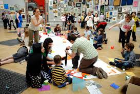

ScreenFreeSummers
ScreenFreeSummers
Free Workshops and Classes in London for Kids This Summer
Published July 2025
London offers an incredible range of free and fun workshops for kids this summer. From museum art projects and riverside archaeology to gallery meet-ups and forest-school style learning in local parks, there’s plenty on offer.
Bank of England Museum puzzles and trails
Week-long family trail events run in early August at the Bank of England Museum. Kids can follow themes like codebreaking or detective games and explore hidden history through interactive puzzles designed for all ages. These drop in activities are completely free.
Royal Parks and London Play Nature Day at Greenwich Park
End of May saw a collaborative family fun day in Greenwich Park featuring nature play spaces in the Flower Garden. Hosted by London Play and Royal Parks staff, kids enjoyed wildlife-inspired creative games and trails. This annual event is free and very interactive.
Garden Museum’s Thursday Creations Programme
In Lambeth, the Garden Museum hosts weekly workshops named Branch Out every Thursday. Children can try paper flower making, clay modelling, rope weaving, patchwork and terrarium building for free, all year round. A lovely creative space, especially during summer.
Serpentine Pavilion Play Pavilion
Kensington Gardens features a creative play structure each summer. The 2025 Serpentine Pavilion includes a sculptural Play Pavilion made from LEGO by architects Peter Cook and his team, inviting spontaneous play and imagination. Entry is free and drop in.
Drop in archaeology at Museum of London Docklands
At the Museum of London Docklands, Tot Days in summer bring archaeology-themed activities for under 5s. Little ones can dig, handle objects and learn about cargo and docks through creative storytelling. This event is free and open attendance.
Open art event in Trafalgar Square
The National Gallery’s Bicentenary finale in late July features open air creative sessions in Trafalgar Square. Families can join art workshops, puppet making, drawing zones and interactive performances inspired by British art history. Free and all ages welcome.
How to find events near you
Want local workshops? Libraries, museum learning teams and borough cultural programmes often share free events online. National listing sites like the Libraries Connected calendar also highlight summer reading, craft days and interactive meet ups.
These events show London has so much more than big attractions free creative and learning experiences are all around, perfect for curious little explorers this summer.